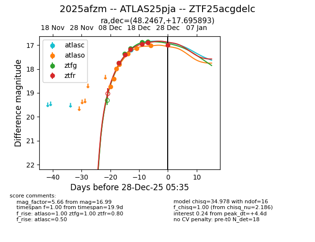
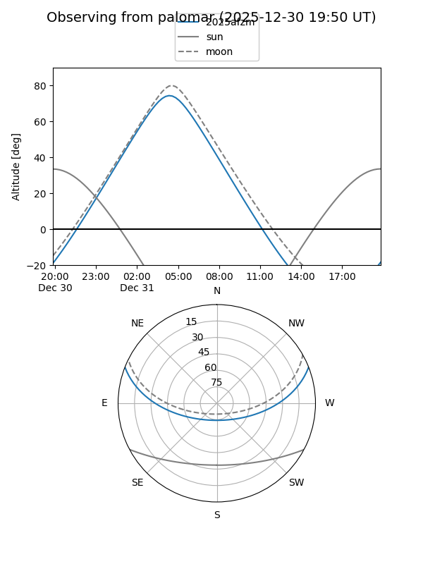
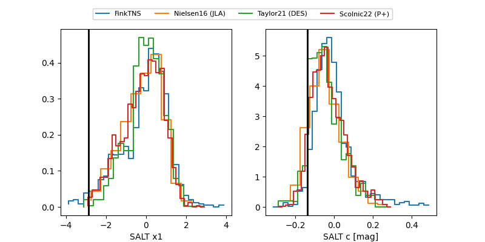

2025afzm
Target 2025afzm at 2025-12-28 05:36
Aliases and brokers:
FINK: fink-portal.org/ZTF25acgdelc
Lasair: lasair-ztf.lsst.ac.uk/objects/ZTF25acgdelc
ALeRCE: alerce.online/object/ZTF25acgdelc
TNS: wis-tns.org/object/2025afzm
YSE: ziggy.ucolick.org/yse/transient_detail/2025afzm
alt names
ZTF25acgdelc (ztf,fink_ztf)
2025afzm (tns,yse)
ATLAS25pja (atlas)
Coordinates:
equatorial (ra, dec) = 48.2467,+17.69589
equatorial (HMS+DMS) = 03:12:59.21,+17:41:45.22
galactic (l, b) = (164.3819,-33.54793)
Flags:
Photometry:
last atlasc=17.19, atlaso=17.02, ztfg=16.86, ztfr=16.99
1 atlasc, 7 atlaso, 5 ztfg, 6 ztfr detections
Lightcurve

Visibility


Additional plots
